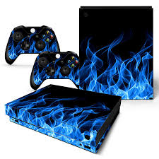
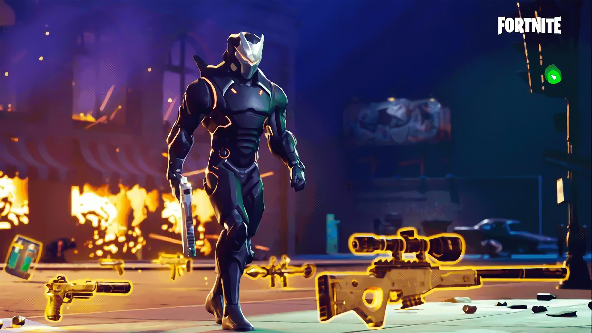

Soccer | E-Sports | Guitar | Coding
This page is about my hobbies
First off, it is my favorite sport, Soccer
This is the list of the best soccer players of all time (according to me):
 Lionel Andrés Messi Cuccittini was born 24 June 1987. He is an Argentine professional footballer who plays as a forward and captains both Spanish club Barcelona and the Argentina national team. Often considered the best player in the world and widely regarded as one of the greatest players of all time, Messi has won a record six Ballon d'Or awards and a record six European Golden Shoes. He has spent his entire professional career with Barcelona where he has won a club-record 34 trophies, including ten La Liga titles, four UEFA Champions League titles and six Copas del Rey. A prolific goalscorer and a creative playmaker, Messi holds the records for most goals in La Liga (433), a La Liga and European league season (50), most hat-tricks in La Liga (35) and the UEFA Champions League (8), and most assists in La Liga (175) and the Copa América (13). He has scored over 700 senior career goals for club and country
Lionel Andrés Messi Cuccittini was born 24 June 1987. He is an Argentine professional footballer who plays as a forward and captains both Spanish club Barcelona and the Argentina national team. Often considered the best player in the world and widely regarded as one of the greatest players of all time, Messi has won a record six Ballon d'Or awards and a record six European Golden Shoes. He has spent his entire professional career with Barcelona where he has won a club-record 34 trophies, including ten La Liga titles, four UEFA Champions League titles and six Copas del Rey. A prolific goalscorer and a creative playmaker, Messi holds the records for most goals in La Liga (433), a La Liga and European league season (50), most hat-tricks in La Liga (35) and the UEFA Champions League (8), and most assists in La Liga (175) and the Copa América (13). He has scored over 700 senior career goals for club and country
For more information about Messi, click here
 Diego Armando Maradona was born 30 October 1960 and is an Argentine football manager and retired professional footballer. He is currently the coach of Argentine Primera División club Gimnasia de La Plata. He is widely regarded as one of the greatest football players of all time. He was one of the two joint winners of the FIFA Player of the 20th Century award. Maradona's vision, passing, ball control and dribbling skills were combined with his small stature (5 ft 5 in), which would allow him to often dribble past multiple opposing players on a run. His presence and leadership on the field had a great effect on his team's general performance, while he would often be singled out by the opposition. A precocious talent, Maradona was given the nickname "The Golden Boy", a name that stuck with him throughout his career. He also won the 1986 World Cup for Argentina
Diego Armando Maradona was born 30 October 1960 and is an Argentine football manager and retired professional footballer. He is currently the coach of Argentine Primera División club Gimnasia de La Plata. He is widely regarded as one of the greatest football players of all time. He was one of the two joint winners of the FIFA Player of the 20th Century award. Maradona's vision, passing, ball control and dribbling skills were combined with his small stature (5 ft 5 in), which would allow him to often dribble past multiple opposing players on a run. His presence and leadership on the field had a great effect on his team's general performance, while he would often be singled out by the opposition. A precocious talent, Maradona was given the nickname "The Golden Boy", a name that stuck with him throughout his career. He also won the 1986 World Cup for Argentina
For more information about Maradona, click here
 Edson Arantes do Nascimento was born 23 October 1940 and is also known as Pelé. He is a Brazilian retired professional footballer who played as a forward. He is widely regarded as one of the greatest players of all time. In 1999, he was voted World Player of the Century by the International Federation of Football History and Statistics (IFFHS), and was one of the two joint winners of the FIFA Player of the Century award. That same year, Pelé was elected Athlete of the Century by the International Olympic Committee. According to the IFFHS, Pelé is the most successful domestic league goal-scorer in football history scoring 650 goals in 694 League matches, and in total 1281 goals in 1363 games, which included unofficial friendlies and is a Guinness World Record. During his playing days, Pelé was for a period the best-paid athlete in the world. He also holds the record for winning the most number of World Cups: 3
Edson Arantes do Nascimento was born 23 October 1940 and is also known as Pelé. He is a Brazilian retired professional footballer who played as a forward. He is widely regarded as one of the greatest players of all time. In 1999, he was voted World Player of the Century by the International Federation of Football History and Statistics (IFFHS), and was one of the two joint winners of the FIFA Player of the Century award. That same year, Pelé was elected Athlete of the Century by the International Olympic Committee. According to the IFFHS, Pelé is the most successful domestic league goal-scorer in football history scoring 650 goals in 694 League matches, and in total 1281 goals in 1363 games, which included unofficial friendlies and is a Guinness World Record. During his playing days, Pelé was for a period the best-paid athlete in the world. He also holds the record for winning the most number of World Cups: 3
For more information about Pelé, click here
 Cristiano Ronaldo dos Santos Aveiro was born 5 February 1985 and is a Portuguese professional footballer who plays as a forward for Serie A club Juventus and captains the Portugal national team. Often considered the best player in the world and widely regarded as one of the greatest players of all time, Ronaldo has won five Ballons d'Ors and four European Golden Shoes, both of which are records for a European player. He has won 29 trophies in his career, including six league titles, five UEFA Champions Leagues, one UEFA European Championship, and one UEFA Nations League. A prolific goalscorer, Ronaldo holds the records for the most goals scored in the UEFA Champions League (128) and the joint-most goals scored in the UEFA European Championship (9). He has scored over 700 senior career goals for club and country.
Cristiano Ronaldo dos Santos Aveiro was born 5 February 1985 and is a Portuguese professional footballer who plays as a forward for Serie A club Juventus and captains the Portugal national team. Often considered the best player in the world and widely regarded as one of the greatest players of all time, Ronaldo has won five Ballons d'Ors and four European Golden Shoes, both of which are records for a European player. He has won 29 trophies in his career, including six league titles, five UEFA Champions Leagues, one UEFA European Championship, and one UEFA Nations League. A prolific goalscorer, Ronaldo holds the records for the most goals scored in the UEFA Champions League (128) and the joint-most goals scored in the UEFA European Championship (9). He has scored over 700 senior career goals for club and country.
For more information about Ronaldo, click here
Second, of course, it is video games
Fortnite is an online video game developed by Epic Games and released in 2017. It is available in three distinct game mode versions that otherwise share the same general gameplay and game engine: Fortnite: Save the World, a cooperative shooter-survival game for up to four players to fight off zombie-like creatures and defend objects with fortifications they can build; Fortnite Battle Royale, a free-to-play battle royale game where up to 100 players fight to be the last person standing; and Fortnite Creative, where players are given complete freedom to create worlds and battle arenas. The first two-game modes were released in 2017 as early access titles and Creative was released on December 6, 2018. Save the World is available only for Windows, macOS, PlayStation 4, and Xbox One, while Battle Royale and Creative released for those platforms, in addition for Nintendo Switch, iOS and Android devices.
For more information about Fortnite, click here
 FIFA 20 is a football simulation video game published by Electronic Arts as part of the FIFA series. It is the 27th installment in the FIFA series, and was released on 27 September 2019 for Microsoft Windows, PlayStation 4, Xbox One, and Nintendo Switch. Real Madrid winger Eden Hazard was named the new cover star of the Regular Edition, with Liverpool defender Virgil van Dijk on the cover of the Champions Edition. Former Juventus and Real Madrid midfielder Zinedine Zidane was later named as the cover star for the Ultimate Edition. The game features VOLTA Football for the first time, a new mode that provides a variance on the traditional 11v11 gameplay and focuses on small-sided street and futsal games. The mode is believed to be focused on the former FIFA Street series.
FIFA 20 is a football simulation video game published by Electronic Arts as part of the FIFA series. It is the 27th installment in the FIFA series, and was released on 27 September 2019 for Microsoft Windows, PlayStation 4, Xbox One, and Nintendo Switch. Real Madrid winger Eden Hazard was named the new cover star of the Regular Edition, with Liverpool defender Virgil van Dijk on the cover of the Champions Edition. Former Juventus and Real Madrid midfielder Zinedine Zidane was later named as the cover star for the Ultimate Edition. The game features VOLTA Football for the first time, a new mode that provides a variance on the traditional 11v11 gameplay and focuses on small-sided street and futsal games. The mode is believed to be focused on the former FIFA Street series.
For more information, click here
Third, is my favorite instrument, guitar
Hotel California by Priyanshu Dasgupta
* This song was originally composed by The Eagles, in the year 1976
This is one of my efforts of performing or recording it
Guitar -- Priyanshu Dasgupta
Vocal -- Priyanshu Dasgupta
Lastly, I love coding

 Just in case, you didn't notice, I actually coded this website (Wow, What a surprise! right?). I am currently familiarlized or introduced and learning HTML, CSS, JavaScript(I know the prior 3 languages stated the most), Python, Unity, C# and LOGO (Scratch doesn't count right?). I mostly work on web development and game development. Link to my github is on the Home Page or right here.
Just in case, you didn't notice, I actually coded this website (Wow, What a surprise! right?). I am currently familiarlized or introduced and learning HTML, CSS, JavaScript(I know the prior 3 languages stated the most), Python, Unity, C# and LOGO (Scratch doesn't count right?). I mostly work on web development and game development. Link to my github is on the Home Page or right here.
For information in general about coding or programming, click here